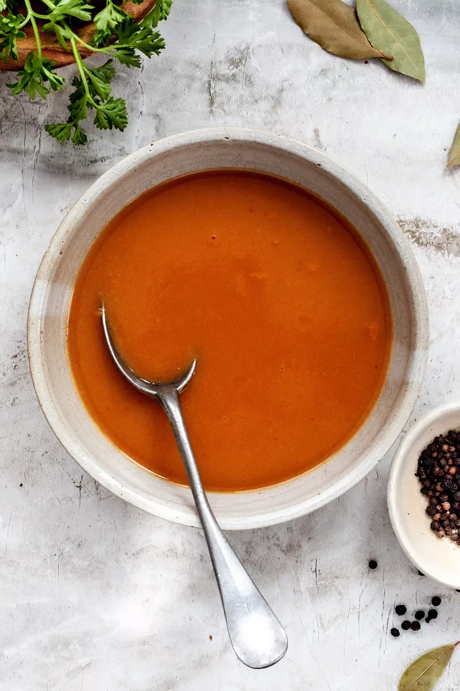

Espagnole Sauce

Description
A classic french Brown Sauce.
A staple in many traditional recipes.
Ingredients
- 4 Tbsp Grass-Finished Unsalted Butter
- 1/2 Medium Onion, Finely Diced
- 1 Stalk Celery, Finely Diced
- 1 Carrot, Finely Diced
- 1/4 Cup All-Purpose Flour
- 4 Cups Unsalted Brown Stock (Veal or 50/50 Beef, Chicken)
- 1/4 Cup Tomato Puree
- Pinch of Pink Himalayan Salt
- 8 Whole Peppercorns
- 1 Bay Leaf
- 4 Parsley Stems
Instructions
- In a heavy bottomed saucepan over medium heat, melt the butter. Add the diced onions, celery, and carrots. Cook, stirring occasionally, until the vegetables are softened, 5 to 6 minutes.
- Add the flour to the pan with the vegetables and whisk to incorporate fully. Reduce the heat to low and cook, whisking often, until the flour turns deep golden brown, 6 to 10 minutes.
- Gradually pour in the stock and whisk simultaneously until there are no lumps in the sauce. Stir in the tomato puree, salt, peppercorns, bay leaf, and parsley stems.
- Bring the sauce to a boil over medium-high heat. Adjust the heat to maintain a steady simmer (small bubbles occasionally rise to the surface of the sauce). Cook for 35 to 45 minutes, stirring frequently to keep the bottom of the pot from scorching, until the volume reduces by about 1/3. When ready the sauce should be just thick enough to coat the back of a spoon. It is not a thick sauce, but approximately the consistency of heavy cream or thin gravy.
- Line a large strainer with cheesecloth and set it over a bowl. Strain the sauce into the bowl and discard the solids.
- Store in an airtight container in the refrigerator for up to 5 days. Reheat over low heat, whisking constantly, on the stovetop. Freeze to store long-term.